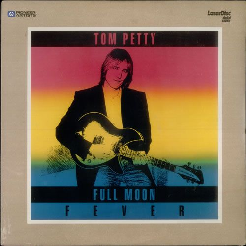
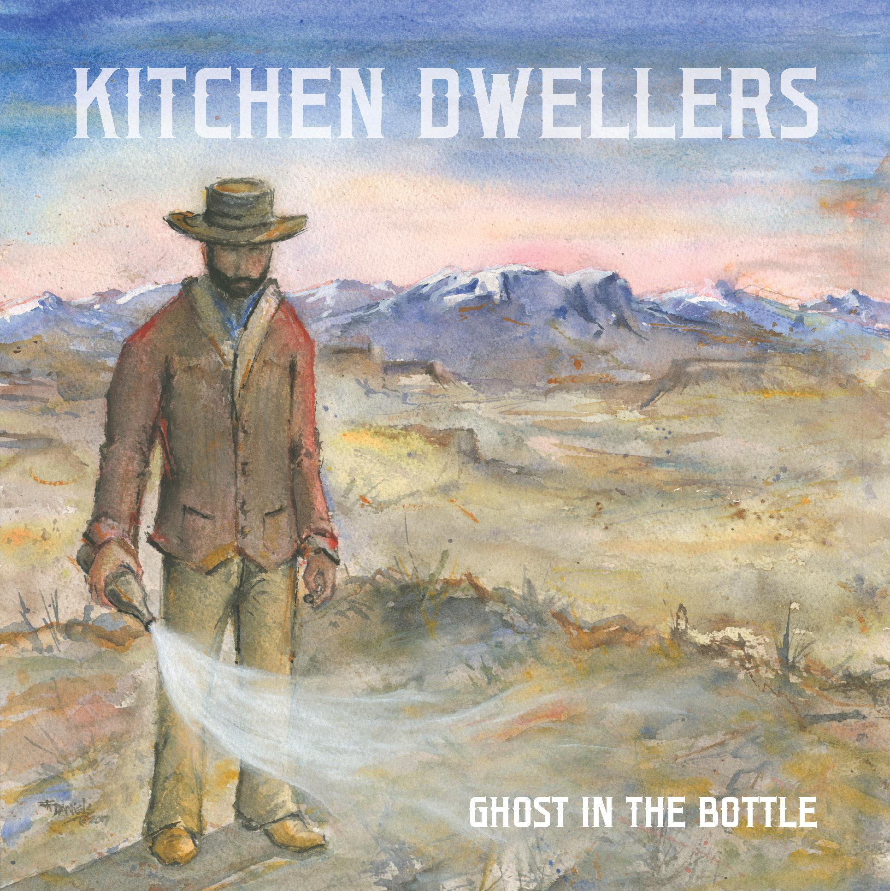
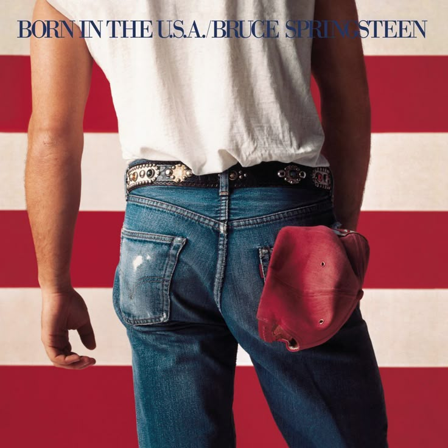
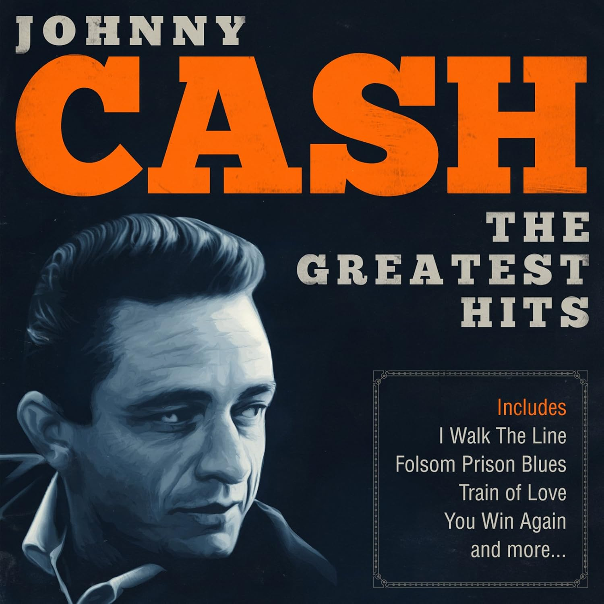
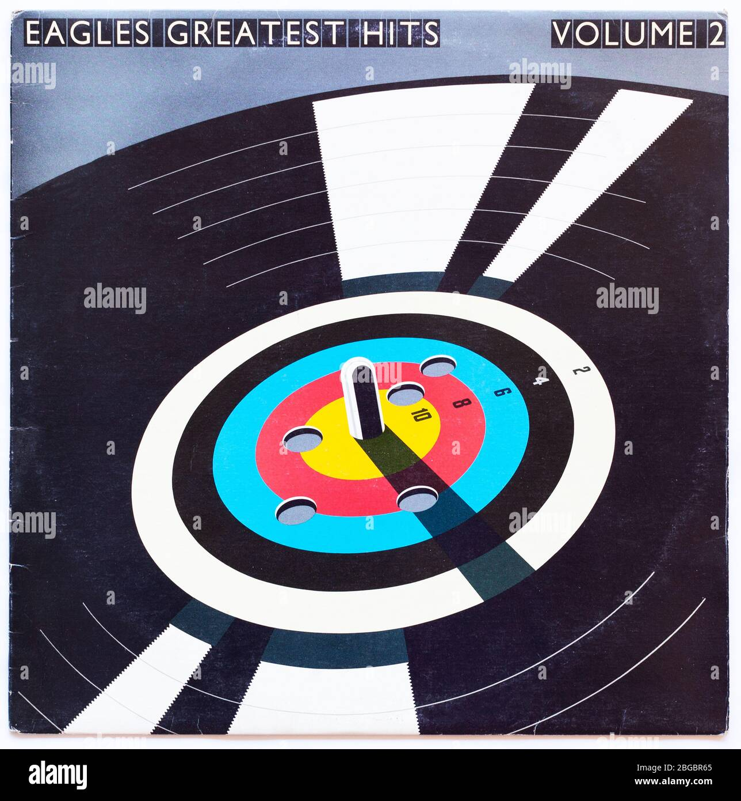

Music is a big part of my life. Here are some of my favorite artists and a song from each that really inspires me.

Favorite Song: Won't Back Down

Favorite Song: Wise River

Favorite Song: I'm on Fire

Favorite Song: Hurt
Favorite Song: Broken Arrows

Favorite Song: Hotel California